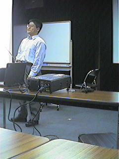
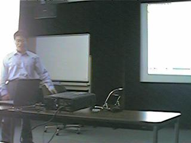
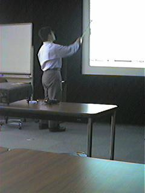
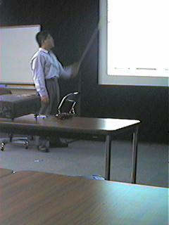
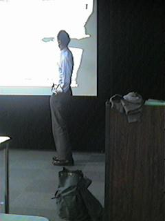

第 248 回 PTT のお知らせ
日時: 1999年4月22日(木) 18:30 から
場所: 電気通信大学情報工学科 西9号館 AVホール(3階)
新宿駅より京王線，調布駅(特急で2つ目，15分) 北口下車，
北西方向徒歩12分程度，電気通信大学西地区キャンパスの
南西端にある白い建物; 甲州街道(国道20号線)
下石原交差点の北20メートルに西門あり．
話者： 山内斉(電通大)
題目： 真鵺道 (manued.el) の実装について
概要:
第 39 回のプログラミングシンポジウムにおいて竹内郁雄によって提案された
Manued の処理系を実装したのでそれについて報告する．Manued とは電子メイ
ル，つまり text 画面上で原稿を校正する方法を指す．
遠隔地において共同研究を行なう際，論文の校正は一つの試練である．郵送に
よるやりとりはその速度が問題となり，Fax では色が使えないことや電子的な
情報ではなくなるという欠点がある．そのため，遠隔地での論文のやりとりに
は通常電子メイルが用いられる．しかし，電子メイルによる原稿のやりとりで
は各人の利用する環境・ソフトウェアの違いや利用可能な文字種の制限により，
紙に朱を入れるような自由度を達成することは難しい．訂正箇所の入力の労力
も紙に比べて大きなものとなる．
筆者がこのような困難さを感じていた時に，第39回のプログラミングシンポジ
ウムにおいて竹内郁雄が「電子メールで原稿を修正する方法」と題し，いかに
して plain text を校正するかの方法を提案した．この校正方法が
Manuscript Editing (Manued)，真鵺道である．Manued では入力の容易さや，
校正記号の解釈の曖昧さの排除，人間の可読性，数分で理解できる簡易性など
が考慮されている．
今回筆者は必要性に迫られて Manued を Emacs 上に実装した．実装において
は竹内の提案をベースとし，日頃実際に利用していく上で必要な機能を拡張し
ている．ベースとなる機能は校正箇所の強調，校正前の文書と校正後の文書の
自動抽出，Manued における校正コマンドのカスタマイズ等である．拡張した
機能としては，リージョンを校正記号で囲むための入力機能，校正箇所のサー
チ機能，さらに \TeX との親和性を考慮し，Manued のカスタマイズ情報を
\TeX のコメント中に埋め込み可としたことなどがある．また，LaTeX-mode な
どと共存可能な minor-mode も実装している．
スナップショット
qv_001.jpg

qv_002.jpg

qv_003.jpg

qv_004.jpg

qv_005.jpg

qv_006.jpg

第 248 回 PTTメモ
日時: 1999年4月22日(木) 18:30 から
場所: 電気通信大学情報工学科 西9号館 AVホール(3階)
題目: 真鵺道 (manued.el) の実装について
話者: 山内斉(電通大)
出席者:
和田英一(富士通研),
鈴鹿倫之,
福田伸彦,
豊泉敦也,
山田雄一郎,
磯貝悟,
村山慎也,
比留間宏充,
角田博保,
浅原慎之輔,
高本宗市,
多田好克,
高田哲司,
前田敦司(電通大),
長慎也(早大),
石畑清(明大),
並木美太郎(農工大),
伊知地宏(富士ゼロックス),
金東虎(理研),
下國治(川崎市),
立山義祐(なし),
田中哲朗(東大)
概要:
第 39 回のプログラミングシンポジウムにおいて竹内郁雄によって提案された
Manued の処理系を実装したのでそれについて報告する．Manued とは電子メイ
ル，つまり text 画面上で原稿を校正する方法を指す．
遠隔地において共同研究を行なう際，論文の校正は一つの試練である．郵送に
よるやりとりはその速度が問題となり，Fax では色が使えないことや電子的な
情報ではなくなるという欠点がある．そのため，遠隔地での論文のやりとりに
は通常電子メイルが用いられる．しかし，電子メイルによる原稿のやりとりで
は各人の利用する環境・ソフトウェアの違いや利用可能な文字種の制限により，
紙に朱を入れるような自由度を達成することは難しい．訂正箇所の入力の労力
も紙に比べて大きなものとなる．
筆者がこのような困難さを感じていた時に，第39回のプログラミングシンポジ
ウムにおいて竹内郁雄が「電子メールで原稿を修正する方法」と題し，いかに
して plain text を校正するかの方法を提案した．この校正方法が
Manuscript Editing (Manued)，真鵺道である．Manued では入力の容易さや，
校正記号の解釈の曖昧さの排除，人間の可読性，数分で理解できる簡易性など
が考慮されている．
今回筆者は必要性に迫られて Manued を Emacs 上に実装した．実装において
は竹内の提案をベースとし，日頃実際に利用していく上で必要な機能を拡張し
ている．ベースとなる機能は校正箇所の強調，校正前の文書と校正後の文書の
自動抽出，Manued における校正コマンドのカスタマイズ等である．拡張した
機能としては，リージョンを校正記号で囲むための入力機能，校正箇所のサー
チ機能，さらに \TeX との親和性を考慮し，Manued のカスタマイズ情報を
\TeX のコメント中に埋め込み可としたことなどがある．また，LaTeX-mode な
どと共存可能な minor-mode も実装している．
質疑応答:
機能などについて，
多田 真鵺道コマンドの長さの制限はあるのか?
山内 (re-search-*) が受けとる文字数ならば大丈夫なはず．
多田 Emacs 上の実装だけではなく，vi 上の実装も欲しい．
???? 既に公開されているのか．
山内 レジメにある URL(http://www.sowa.is.uec.ac.jp/~yamauchi/) にて
公開されている．
真鵺道文書を manued-mode で眺めるのは便利であるが，真鵺道文書を作成す
ること自体に抵抗がある利用者から，校正前と校正後の文書から真鵺道文書を
生成するコマンドを作成して欲しいという話があったことに対する質疑応答．
(和田 常に [元文書全部\新文書全部] とすれば良い．)
多田 行単位ではあまり良くないので，何か基準を用いることはできないか
最適な真鵺道コマンドの発行を考えるとどうなるのか．つまり，良い
真鵺道文書とは何か
和田 差分が少なくなり，原文の感じをできるだけそこなわないものが良い
のでは．
前田 diff をとって，その diff の部分からさらに 1 文字づつ改行を入れ
たファイルを作成し，また diff をとれば最適な真鵺道コマンドの生
成が可能では?
田中 形態素解析ツールを使って単語ごとにするのが良いのでは
真鵺道自体は有用であるが，基本的な利用形態として遠隔地での校正というこ
とを考えている．しかし，このような状況は少なく，真鵺道自体が受け入れら
れるかは疑問という話に対して．
???? 通常の原稿の校正も電子的にやりたいことはいくらでもあるのではな
いか．
和田 博士論文のような長い文書においては，全てを見直すのがたいへんな
ので，修正した部分を原稿として示すのは有用．
また，和田先生が作成された manued.el についてのデモと説明もあった．